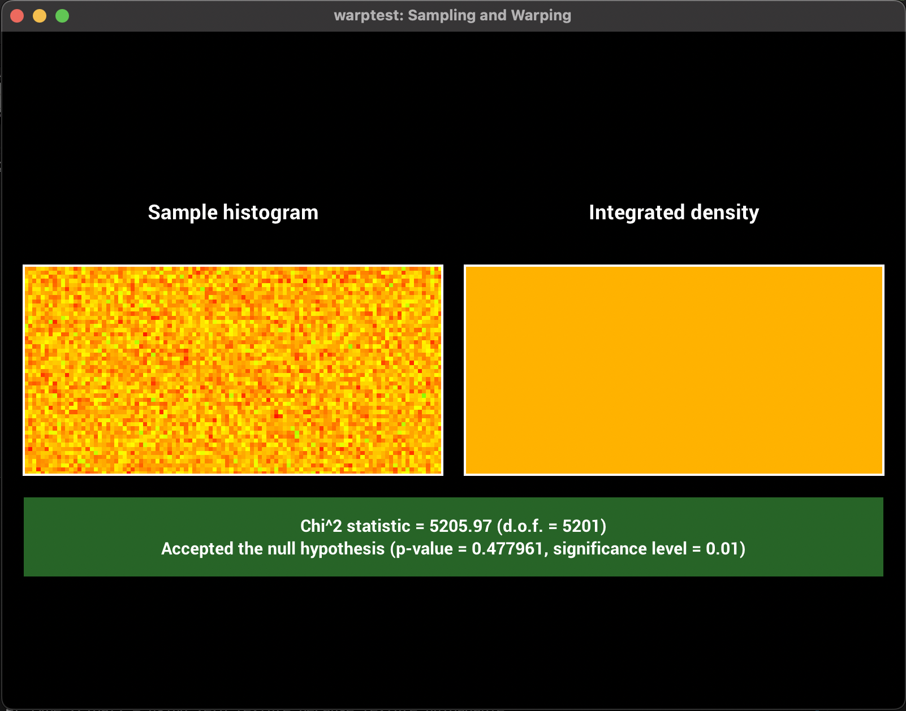

**Homework 2 - Sampling and Warping**
Student Name: Zehang Qiu
Legi Number: 22-739-809
(Note: please read the [supplementary](#supplementary) section first before working on this report.)
# Square to Uniform Disk
**Time spent on this task:**
10 min
**Describe your implementation of `Warp::squareToUniformDisk` and the associated PDF.**
I simply follow the instructions in lecture notes and pbrt
(https://www.pbr-book.org/3ed-2018/Monte_Carlo_Integration/2D_Sampling_with_Multidimensional_Transformations#SamplingaUnitDisk)
For the PDF part, since it is uniform, the PBF of it should be $1/{Area}$. Here the Area of the
disk should be $\pi$.
**Warping Visualization:**
**$\chi^2$ Hypothesis Test Outcome:**
# Square to Uniform Sphere
**Time spent on this task:**
10 min
**Describe your implementation of `Warp::squareToUniformSphere` and the associated PDF.**
I just extend the previous code using the note from lecture slice 08-monte-carlo.pdf#P79.
For the PDF part, since it is uniform, the PBF of it should be $1/{Area}$. Here the Area of the
sphere should be $4\pi$.
**Warping Visualization:**
**$\chi^2$ Hypothesis Test Outcome:**

# Square to Uniform Hemisphere
**Time spent on this task:**
10 min
**Describe your implementation of `Warp::squareToUniformHemisphere` and the associated PDF.**
Similar to the previous one. However, here the z value of hemisphere fall within the [0,1] range instead of [-1,1],
so I directly chose sample[0] as its value. The reasons of this refer to pbrt
(https://www.pbr-book.org/3ed-2018/Monte_Carlo_Integration/2D_Sampling_with_Multidimensional_Transformations#UniformlySamplingaHemisphere)
For the PDF part, since it is uniform, the PBF of it should be $1/{Area}$. Here the Area of the
hemisphere should be $2\pi$.
**Warping Visualization:**
**$\chi^2$ Hypothesis Test Outcome:**
# Square to Uniform Spherical Cap
**Time spent on this task:**
20min
**Describe your implementation of `Warp::squareToUniformSphericalCap` and the associated PDF.**
Similar to previous approach, the z value of cap fall within the interval [cosThetaMax,1]
with a range of 1-cosThetaMax for the interval. The value of z is then calculated to
1-sample[0]*(the interval range).
For the PDF part, since it is uniform, the PBF of it should be $1/{Area}$. Here the Area of the
hemisphere should be $2\pi*R*h$ with R equals to the radius of sphere and h refers to the height of the cap.
**Warping Visualization:**
**$\chi^2$ Hypothesis Test Outcome:**
# Square to Cosine Hemisphere
**Time spent on this task:**
30min
**Describe your implementation of `Warp::squareToCosineHemisphere` and the associated PDF.**
PDF $$ p = \frac{cos\theta}{\pi} $$
CDF $$ P = \frac{1}{\pi} \int_{0}^{\theta} cos(x) dx = \frac{1}{\pi} sin\theta $$
$$ sample[0] = \frac{1}{\pi} sin\theta $$
$$ sin\theta = \pi sample[0] $$
$$ cos\theta = \sqrt{1-sin^2\theta} = \sqrt{1-(\pi*sample[0])^2} $$
However, this causes a problem because $\pi*sample[0]^2$ is not always less than 1.
Using $max(0, \cos\theta)$ will result in samples clustering at $hem.z=0$.
An alternative solution is to apply the square root to the cosine square value,
thus let $ cos^2\theta = 1 - sample[0] $.
In this way, $ cos\theta = \sqrt{1-sample[0]} $
PDF in this case equals to $ p = \frac{cos\theta}{\pi} $
**Warping Visualization:**
**$\chi^2$ Hypothesis Test Outcome:**
# Square to Beckmann
(Please use the provided LaTeX template to answer the questions in this section. For LaTeX math symbols and formulas, referring to this [cheatsheet](http://tug.ctan.org/info/undergradmath/undergradmath.pdf) is recommended.)
**Time spent on this task:**
1.5 h
**Show your derivation of $\int_0^{2\pi}\int_0^{\frac{\pi}{2}}p(\theta, \phi)~d\theta d\phi = 1$ for Beckmann distribution**:
\begin{equation}
\begin{split}
\bullet ~ P(\theta_0, \phi_0) & = \int_0^{\phi_0}\int_0^{\theta_0}p(\theta, \phi)~d\theta d\phi \\
& = \int_0^{\phi_0}\int_0^{\theta_0}\frac{e^{\frac{-\tan^2\theta}{\alpha^2}}}{\pi \alpha^2 \cos^4\theta} \cos\theta \sin\theta ~d\theta d\phi \\
& let I = \int_0^{\theta_0}\frac{e^{\frac{-\tan^2\theta}{\alpha^2}}}{\pi \alpha^2 \cos^4\theta} \cos\theta \sin\theta ~d\theta \\
\end{split}
\end{equation}
let $ x = cos\theta $, $ \theta_{down} = 0, x_{down} = 1 $, $ \theta_{up} = \theta_0, x_{up} = cos\theta_0 $
$$ \frac{dx}{d\theta} = -sin\theta $$
$$ \frac{d\theta}{dx} = - \frac{1}{sin\theta} $$
since $ sin^2\theta = 1 - x^2 $ ,
$$ \frac{d\theta}{dx} = - \frac{1}{\sqrt{1-x^2}} $$
Given $ x = cos\theta $, $ tan^2\theta = \frac{1-x^2}{x^2} $
\begin{equation}
\begin{split}
& I = \int_0^{\theta_0}\frac{1}{\pi}\frac{e^{\frac{-\tan^2\theta}{\alpha^2}sin\theta}}{\alpha^2 \cos^3\theta} ~d\theta \\
& = \int_1^{cos\theta_0}\frac{1}{\pi}\frac{e^{\frac{-(1-x^2)}{\alpha^2 x^2}\sqrt{1-x^2}}}{\alpha^2 x^3} ~ - \frac{1}{\sqrt{1-x^2}} dx \\
& = \int_1^{cos\theta_0}-\frac{1}{\pi}\frac{e^{\frac{-(1-x^2)}{\alpha^2 x^2}}}{\alpha^2 x^3} ~ dx \\
\end{split}
\end{equation}
Given $$ \frac{d}{dx} \frac{x^2-1}{\alpha^2x^2} = \frac{2}{\alpha^2x^3} $$
and $$ \int f'(x)e^{f(x)} ~dx = e^{f(x)} + C $$
\begin{equation}
\begin{split}
& I = \int_1^{cos\theta_0}-\frac{1}{2\pi} \frac{2}{\alpha^2 x^3} e^{\frac{-(1-x^2)}{\alpha^2 x^2}} ~ dx \\
& = \frac{1}{2\pi} \int_1^{cos\theta_0} - \frac{2}{\alpha^2 x^3} e^{\frac{x^2-1}{\alpha^2 x^2}} ~ dx \\
& = \frac{1}{2\pi} [-e^{\frac{x^2-1}{\alpha^2 x^2}}]\Bigg|_{1}^{cos\theta_0} \\
& = \frac{1}{2\pi} [1-e^{\frac{x_0^2-1}{\alpha^2 x_0^2}}], x_0 = cos\theta_0 \\
\end{split}
\end{equation}
Given $$ P(\theta_0, \phi_0) = \int_0^{\phi_0}\int_0^{\theta_0}\frac{e^{\frac{-\tan^2\theta}{\alpha^2}}}{\pi \alpha^2 \cos^4\theta} \cos\theta \sin\theta ~d\theta d\phi $$
$$ = \int_0^{\phi_0} I d\phi $$
$$ I = \frac{1}{2\pi} [1-e^{\frac{x_0^2-1}{\alpha^2 x_0^2}}], x_0 = cos\theta_0 $$
Given $$ \theta_0 = \frac{\pi}{2}, cos\theta_0 = cos\frac{\pi}{2} = 0 $$
Since denominator could not be zero
$$ \lim_{x \to 0} \frac{x^2-1}{x^2} = 1- \frac{1}{x^2}= -\infty $$
$$ \lim_{x \to -\infty} e^x = 0 $$
$$ I = \frac{1}{2\pi} $$
Given $$ \phi_0 = 2\pi $$
\begin{equation}
\begin{split}
\bullet ~ P(\frac{\pi}{2}, 2\pi) & = \int_0^{2\pi} I d\phi \\
& = \frac{1}{2\pi} \phi\Bigg|_{0}^{2\pi} \\
& = 1
\end{split}
\end{equation}
refer to
https://pbr-book.org/3ed-2018/Light_Transport_I_Surface_Reflection/Sampling_Reflection_Functions#eq:beckmann-hemi-distrib
**Show your derivation of the Beckmann distribution sampling strategy by inverting the CDF, given random uniform samples $\xi_1, \xi_2$**:
\begin{equation}
\begin{split}
& \bullet ~ p(\theta, \phi) = \frac{e^{\frac{-\tan^2\theta}{\alpha^2}}}{\pi \alpha^2 \cos^4\theta} \cos\theta \sin\theta \\
& \bullet ~ \phi = 2\pi\xi_2 \\
\end{split}
\end{equation}
since $\phi$ and $\theta$ are independent
\begin{equation}
\begin{split}
& \bullet ~ p_h(\theta) = \frac{2e^{\frac{-\tan^2\theta}{\alpha^2}sin\theta}}{\alpha^2 \cos^3\theta} \\
& P_h(\theta') = \int_0^{\theta'}\frac{2e^{\frac{-\tan^2\theta}{\alpha^2}sin\theta}}{\alpha^2 \cos^3\theta} ~d\theta \\
\end{split}
\end{equation}
let $ x = cos\theta $, $ \theta_{down} = 0, x_{down} = 1 $, $ \theta_{up} = \theta, x_{up} = cos\theta $
$$ \frac{dx}{d\theta} = -sin\theta $$
$$ \frac{d\theta}{dx} = - \frac{1}{sin\theta} $$
since $ sin^2\theta = 1 - x^2 $ ,
$$ \frac{d\theta}{dx} = - \frac{1}{\sqrt{1-x^2}} $$
Given $ x = cos\theta $, $ tan^2\theta = \frac{1-x^2}{x^2} $
\begin{equation}
\begin{split}
& P_h(\theta') = \int_0^{\theta'}\frac{2e^{\frac{-\tan^2\theta}{\alpha^2}sin\theta}}{\alpha^2 \cos^3\theta} ~d\theta \\
& = \int_1^{cos\theta}\frac{2e^{\frac{-(1-x^2)}{\alpha^2 x^2}\sqrt{1-x^2}}}{\alpha^2 x^3} ~ - \frac{1}{\sqrt{1-x^2}} dx \\
& = \int_1^{cos\theta}-\frac{2e^{\frac{-(1-x^2)}{\alpha^2 x^2}}}{\alpha^2 x^3} ~ dx \\
\end{split}
\end{equation}
Given $$ \frac{d}{dx} \frac{x^2-1}{\alpha^2x^2} = \frac{2}{\alpha^2x^3} $$
and $$ \int f'(x)e^{f(x)} ~dx = e^{f(x)} + C $$
\begin{equation}
\begin{split}
& \int_1^{cos\theta}\frac{2}{\alpha^2 x^3}e^{\frac{-(1-x^2)}{\alpha^2 x^2}} ~ - dx \\
& = \int f'(x)e^{f(x)} ~dx, f(x) = {-\frac{1-x^2}{\alpha^2 x^2}}\\
& = - e^{-\frac{1-x^2}{\alpha^2 x^2}} \Bigg|_{1}^{cos\theta} \\
\end{split}
\end{equation}
Given $$ \frac{1-cos^2\theta}{\alpha^2cos^2\theta} = \frac{tan^2\theta}{\alpha^2} $$
\begin{equation}
\begin{split}
& - e^{-\frac{1-x^2}{\alpha^2 x^2}} \Bigg|_{1}^{cos\theta} \\
& = 1-e^{-tan^2\theta' / \alpha^2} \\
& \xi_1 = 1-e^{-tan^2\theta' / \alpha^2} \\
& \bullet ~ \theta = tan^{-1}\sqrt{-\alpha^2 * log(1 - \xi_1)} \\
& \bullet ~ Sampled ~ Point: \\
& ~~~~ x = sin\phi cos\theta \\
& ~~~~ y = sin\phi sin\theta \\
& ~~~~ z = cos\theta
\end{split}
\end{equation}
**Warping Visualization:**
**$\chi^2$ Hypothesis Test Outcome:**
# Feedback
**Use this section to provide feedback about this assignment (each task, the handout, Nori, etc.). We appreciate your opinions to help improve future homeworks and projects.**
All is good, while the Beckmann interval is a little bit hard to solve.
# Supplementary
* For each task, please note down the time you spent working through it and use at least a few sentences to describe your implementation. If applicable, also report the problems you encounter (e.g. whether or how it's solved, what is the difficult part).
* Please let us know to what extent your code is working (e.g. you only managed to work through part of this assignment, or your solution doesn't operate as expected in some corner cases). We encourage you to share your thinking process, and points will be granted based on your description even if the code is not 100% functioning.
* Nori generates both EXR and PNG format output. Please use PNG for image comparison in the report.
* This report template uses [Markdeep](https://casual-effects.com/markdeep/), which supports Markdown syntax in HTML file. For example usage, please refer to the [official demo document](https://casual-effects.com/markdeep/features.md.html).
* LaTeX is also supported for typing mathematical formulas:
$$
L_o(\mathbf{x}, \omega_o) = \int_{\Omega} L_i(\mathbf{x},\omega_i)\, f(\mathbf{x}, \omega_i, \omega_o)\, |\cos\theta_i|\, \mathrm{d}\omega_i
$$